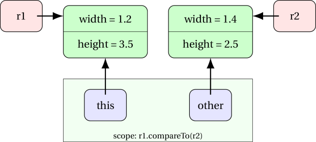

Objects - Data and Functions combined
Assumed Knowledge:
Learning Outcomes:
- Recognise that objects have functions attached
- Be able to use such functions
- Be able to write such functions
Author: Gaurav Gupta
Did you know an object can have a function “attached” to it. In fact, any object can have lots of functions attached to it. Even more exciting, all objects that are of the same type (i.e. were built from the same class) all have the same functions attached to them.
Methods
A function attached to an object is called an instance method and it has two differences from a normal function:
- you call it via the object with dot-notation
<object>.<instanceMethod>(<optional parameters>);
- it can access the instance members (instance variables and other instance methods) of the object it is attached to.
This lifts object from mere custom-compound-data to something more, something profound…. objects! All right, we already called them objects, but things with lots of data fields and lots of functions all bundled up together are so incredibly useful they have become the basis of most programming in the 21st century. We really don’t do much with boring old ‘int’ or ‘char’ values, we are much more likely to use some object, after all - it has methods attached!
You will see striking uses of methods especially after we cover Composition.
Using Methods
There were methods just waiting for us already, on the String objects we have been using:
charAt(int): char(this meanscharAtaccepts anintas a parameter and returns achar)substring(int): Stringequals(String): boolean
An example of how these methods are called on a String objected str is:
String str = "Engorgio!";
int idx = str.indexOf('g');
char first = str.charAt(0);
char last = str.chatAt(str.length()-1);
char allButFirst = str.substring(1);
char allButLast = str.substring(0, str.length()-1);
In each of the above cases, we call the method on an object (in this case str). This object, on which an instance method is caled, is known as the calling object.
Creating our own methods
When we want to operate on an instance of a class, we can put that behaviour inside the class as an instance method. An instance method has access to the variables of the instance on which it is called. In other words, an instance method has access to the instance variables of the calling object.
public class Rectangle {
public double width, height;
public Rectangle(double w, double h) {
width = w;
height = h;
}
public double area() {
double result = width * height;
return result;
}
}
In a separate client code, we call this method on an instance of class Rectangle as,
public class Client {
public static void main(String[] args) {
Rectangle r1 = new Rectangle(10, 20);
double area1 = r1.area();
Rectangle r2 = new Rectangle(30, 40);
double area2 = r2.area();
}
}
We don’t have to pass values of instance variables to instance methods.
A special reference - “this”
When we call the instance method area on object r1, a reference copy of r1 is made into this which is available while r1.area executes. When we access width (or this.width), it’s the instance variable width of the calling object (r1 in this case) that is accessed. Same goes for height.
However, if the instance method needs some parameters outside of the instance variables, those must be passed. For example, if you need to resize a Rectangle object, the factor by which it must be resized needs to be passed to the method.
public class Rectangle {
public double width, height;
public Rectangle(double w, double h) {
width = w;
height = h;
}
public void resize(double factor) {
width = width * factor;
height = height * factor;
}
}
The method call to shrink object r1 used in the previous example by 50% in each direction would be r1.resize(0.5);.
A method returning an object (typically of the same class)
Inside a method, one must (typically) not modify the calling object.
Hence, instead of the method resize that we wrote in the previous section, we should create a resized Rectangle object and return it instead.
public Rectangle getResized(double factor) {
double w = width * factor;
double h = height * factor;
//create a new object with the fresh values
Rectangle result = new Rectangle(w, h);
return result;
}
Another example:
public class Fraction {
public int num, den;
public Fraction(int n, int d) { //assume d is not 0
num = n;
den = d;
}
public Fraction getInverse() {
if(num == 0) {
return null; //x/0 is undefined
}
return new Fraction(den, num); //switch numerator and denomenator
}
}
Special mention - compareTo
It is very common to have to compare objects. This is done through the compareTo method, that is called on an object (calling object) with another object of a comparable type (usually an object of the same class) being passed as a parameter (parameter object). It returns,
- 1, if calling object is “more than” parameter object
- -1, if calling object is “less than” parameter object
- 0, if calling object is “same as” parameter object
The definition of more or less or same is determined by domain-specific criterion/ criteria.
For example, two rectangles can be compared on the basis of area as,
public class Rectangle {
public double width, height;
public Rectangle(double w, double h) {
width = w;
height = h;
}
public double area() {
double result = width * height;
return result;
}
public int compareTo(Rectangle other) {
if(area() > other.area())
return 1;
if(area() < other.area())
return -1;
//in all other cases
return 0;
}
}
In the above example, area() calls the method area on the calling object, and other.area() calls the method area on the parameter object.
Let’s see an example of how we call compareTo and what happens in the memory:
public class Client {
public static void main(String[] args) {
Rectangle r1 = new Rectangle(1.2, 3.5);
Rectangle r2 = new Rectangle(1.4, 2.5);
int status = r1.compareTo(r2);
}
}

- A reference copy of the calling object (
r1in this case) is made intothis. - A reference copy of the passed object (
r2in this case) is made into the formal parameter (otherin this case). - Control is transferred to
compareTo. - Following execution ensues:

Special methods all objects have
Thanks to a feature of Java we will learn later there are some methods that “come for free” in every class (and thus are attached to every object). A few of these are interesting to us:
toString(): Stringequals(Object): boolean
Distinction between static and non-static
Members (both variables and methods) in a class can be declared as,
- static members or class members: these are properties of the collective class, not a specific instance, and can be invoked on the class directly, or an object of that class.
- non-static members or instance members: these are properties of a specific instance and can only be invoked on instances.
The following example illustrates the differences:
public class Foo {
public int bar;
public static int pog = 101;
public int pac() {
return bar * bar;
}
public static int man() {
return (int)(Math.random()*pog);
}
public static void main(String[] args) {
Foo rig = new Foo();
//System.out.println(Foo.bar); //INVALID
System.out.println(rig.bar); //0
System.out.println(Foo.pog); //101
System.out.println(rig.pog); //101
//System.out.println(Foo.pac()); //INVALID
System.out.println(rig.pac()); //0
System.out.println(Foo.man()); //an integer value between 0 and pog-1
System.out.println(rig.man()); //an integer value between 0 and pog-1
}
}